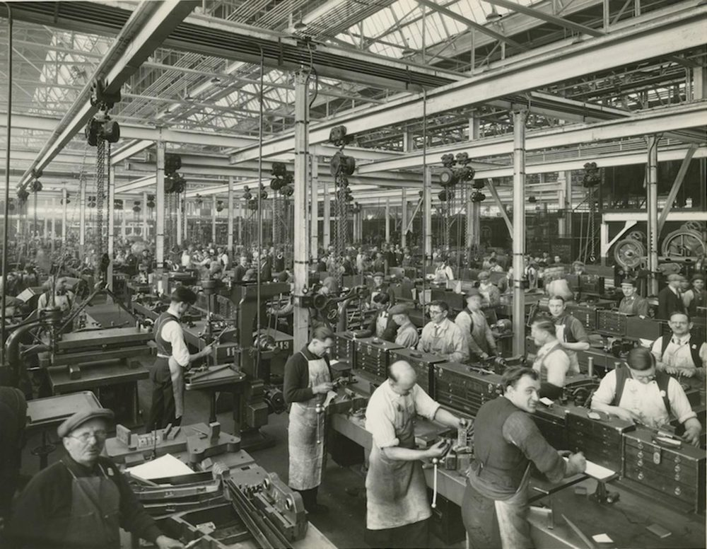

Impact of Colonial Rule on Indian SocietyHigh priority
Use Yogendra Singh's adaptation thesis as the spine, then add reform movements and the postcolonial critique as evidence.
Chapter map#
- Colonial impact
Changes
- Economic
- Political-administrative
- Social
- Cultural
Movements
- Socio-religious
- Anti-caste
- Peasant
- Women's
- Tribal
Causes
- Education
- Missionary critique
- Exploitation
- Press
- Middle class
Modernization
- Yogendra Singh
- Orthogenetic
- Heterogenetic
Postcolonial
- Said
- Dirks, Cohn
- Spivak
Exam lens#
The story first#
In simple words#
- Colonial rule brought modern institutions and ideas and also exploitation: its impact was contradictory.
- Five streams of protest: socio-religious, anti-caste, peasant, women's, tribal.
- Yogendra Singh: tradition adapts to modernity (orthogenetic internal, heterogenetic external); postcolonial scholars: colonial knowledge itself reshaped caste and stereotypes.
| Term | In plain words |
|---|---|
| Orthogenetic change | Change from within a society, such as Bhakti, Buddhism, Sanskritisation. |
| Heterogenetic change | Change from outside, mainly colonial institutions and Hindu-Muslim encounter. |
| Tinkathia system | Forced indigo cultivation in Champaran by European planters. |
| Satyashodhak Samaj | Phule's 1873 society attacking Brahmanical supremacy. |
| Orientalism | Said: Western scholarship portrayed the East as irrational and inferior. |
| Westernization | Srinivas: changes due to British rule such as education, transport, bureaucracy. |
| Subaltern | Marginalised groups; here peasants, tribals, Dalits. |
1 · Introduction: colonial transformation#
- The colonial period marked a decisive phase of transformation in Indian society, bringing about profound changes in its economic, political, and socio-cultural structures.
- Colonial rule did not only impose external control but also reconfigured existing institutions, identities, and social relations through new systems of administration, law, education, and economy.
- It introduced modern ideas such as rationality, equality, and individual rights, while simultaneously disrupting traditional structures and generating new forms of inequality and resistance.
- As a result, Indian society during this period witnessed both processes of change and continuity, reflected in the emergence of reform movements, protest mobilizations, and the gradual modernization of social institutions.
2 · Major Changes due to Colonial Rule#


- Colonial rule fundamentally transformed Indian society by restructuring its economy, polity, social institutions and cultural life.
- Its impact was, however,contradictory: while it introduced modern institutions, education, law and new ideas of rights and equality, it also produced economic exploitation, social disruption and new forms of inequality.
- Economic transformation: Colonialism commercialized agriculture, introduced new land-revenue arrangements, expanded markets and transport networks, and integrated India into the world capitalist economy.
- At the same time, deindustrialization of traditional handicrafts and colonial extraction disrupted existing livelihoods and increased agrarian pressures.
- Political-administrative changes: A centralized bureaucratic state, codified law, modern judiciary, police, census and administrative institutions transformed the relationship between state and society.
- Modern political institutions also gradually created new forms of citizenship and political participation.
- Social transformation: Modern education, urbanization, occupational diversification and new middle classes weakened the exclusivity of some traditional status structures.
- Ideas of equality, individual rights and social reform provided new bases for questioning caste, untouchability and gender inequality.
- Cultural transformation: English education, print culture, newspapers and Western liberal-rational ideas created a new public sphere.
- However, Indian traditions did not simply disappear; they were reinterpreted and selectively modernized, as Yogendra Singh explains.
- Resistance movements: Colonial exploitation generated peasant, tribal, anti-caste and nationalist mobilizations, turning previously localized grievances into wider political consciousness.
- Thus, colonialism was neither simply a force of modernization nor merely one of disruption.
- It produced a complex interplay of change and continuity, where externally introduced institutions interacted with indigenous structures and generated new classes, identities, social movements and forms of resistance, profoundly shaping the trajectory of modern Indian society.
3 · Social reforms, protests and movements during the colonial period#
- The colonial period in India witnessed a wide spectrum of social protests, reform movements, and mobilisations emerging from different sections of society.
- These included tribal uprisings, peasant movements, anti-caste movements, women’s organisations, and socio-religious reform movements across communities.
- Together, these movements reflected both resistance to colonial exploitation and internal critique of Indian society, thereby laying the foundations of modern India.
4 · 1. Socio-religious reform movements#
- 1. Socio-religious Reform Movements Movements such as Brahmo Samaj, Arya Samaj, Prarthana Samaj, and Ramakrishna Mission sought to reform Hindu society by challenging practices like sati, child marriage, caste rigidity, and superstition, while also attempting to reinterpret tradition in rational and ethical terms.
- Similar reform initiatives emerged among other communities, such as the Aligarh Movement among Muslims (promoting modern education) and the Deoband Movement (revivalist orientation), as well as reform efforts among Parsis and Sikhs.
- These movements often combined reform with revival, attempting both purification and modernization of religion.
5 · 2. Anti-Caste and Anti-Brahmanical Movements#
- A major strand of protest was directed against caste oppression and Brahmanical dominance.
- Movements such as the Satya Shodhak Samaj, Self-Respect Movement, Temple Entry Movements (Vaikom), and Mahad Satyagraha challenged caste hierarchies and untouchability.
- These movements marked a shift from reform within tradition to assertion of dignity, rights, and equality, especially among the lower castes.
- Anti-Brahmanical movements challenged not merely untouchability but the ideological and institutional dominance associated with the caste hierarchy.
- Jyotirao Phule’s Satyashodhak Samaj (1873) attacked Brahmanical supremacy and linked caste oppression with exploitation of Shudras, Ati-shudras and peasants.
- In South India, the Non-Brahmin Movement and later Periyar’s Self-Respect Movement (1925) challenged Brahmin dominance in education, administration, religion and public life, while advocating self-respect, rationalism, women’s rights and social equality.
- These movements transformed caste from an accepted hierarchical order into a field of political contestation and laid foundations for later backward-class assertion and affirmative-action politics.
6 · 3. Peasant Movements#
- Peasant movements emerged as a response to colonial agrarian policies and exploitation by landlords and planters.
- Movements like the Indigo Revolt, Champaran Satyagraha, Kheda and Bardoli movements highlighted issues of forced cultivation, high taxation, indebtedness, and lack of rights.
- Jyotirao Phule stands out for linking caste oppression with agrarian exploitation.
- He argued that Indian society was fundamentally agrarian, and the peasantry - largely from lower castes - was subjected to multiple layers of exploitation: colonial revenue policies, moneylenders, and upper-caste officials.
7 · Jyotirao Phule and the Champaran movement#
- fought against the caste system as well as the exploitation of peasantry Phule highlighted how the decline of handicrafts and administrative restructuring under colonial rule increased pressure on land, worsening agrarian distress.
- Through works like Gulamgiri and Shetkaracha Asud, he exposed the structural exploitation of peasants and advocated reforms such as education of peasants, state support for irrigation and agriculture, and reduction in land revenue.
- His analysis reflects an early understanding of agrarian political economy and caste-class intersection, making him a significant agrarian radical.
- The Champaran Movement (1917) is particularly significant as:
- It marked the entry of peasants into organized political action.
- It revealed the exploitative nexus between colonial state and European planters (e.g., tinkathia system).
- It demonstrated the role of leadership in mobilizing marginalized groups.
- It transformed a local agrarian issue into a broader political movement, linking economic grievances with nationalist politics.
8 · 4. Women’s Movements#
- Women’s organisations such as the All India Women’s Conference and Bharat Stri Mahamandal played a crucial role in addressing issues like education, child marriage, widow remarriage, and legal rights.
- Legislative reforms such as the abolition of sati, Widow Remarriage Act, and Age of Consent laws were outcomes of sustained reform efforts.
- Women’s reform movements - particularly those addressing education and legal rights - played an effective role in modernizing Indian women, as they expanded access to education, challenged patriarchal norms, and created space for women’s public participation.
9 · 5. Tribal Movements#
- Numerous tribal uprisings (Santhal, Munda, Naga, and others) emerged as resistance against land alienation, forest laws, and cultural intrusion.
- These movements reflected both economic exploitation and cultural resistance, often combining religious idioms with political protest.
10 · Causative Factors for the Rise of Reform and Protest Movements#
- 1. Spread of modern education and new ideas of liberty, equality, and rights 2.
- Colonial critique of Indian society by missionaries and administrators 3.
- Economic exploitation and agrarian distress under colonial rule 4.
- Role of printing press and communication networks 5.
- Emergence of new middle classes and public sphere
11 · Impact of Reform and Protest Movements#
- These movements had far-reaching consequences for Indian society:
- 1. Exposure of Social Evils: They brought issues like untouchability, caste discrimination, and gender inequality into public debate.
- 2. Legislative Reforms: They led to major legal changes such as the abolition of sati (1829), Widow Remarriage Act (1856), and reforms in age of marriage.
- 3. Modernization of Society: They introduced modern values like liberty, equality, rationality, and questioned orthodoxy.
- 4. Spread of Education: They promoted modern education, especially among women, lower castes, and marginalized groups.
- 5. Sanskritization: Some movements contributed to Sanskritisation and upward mobility, leading to adoption of cultural practices and lifestyle of upper castes by tribal groups and the lower castes.
- 6. Democratization: Reform movements challenged inherited inequalities of caste and gender and brought ideas of dignity, rights, equality and social justice into public discourse, laying foundations for later constitutional democracy.
- 7. Contribution to Nationalism: They fostered national consciousness, countered colonial stereotypes, and created a sense of collective identity and pride.
- Overall, these movements acted as a bridge between tradition and modernity, initiating processes of social reform, political mobilization, and cultural reassertion, thereby playing a crucial role in shaping modern Indian society.
- Criticisms Despite their contributions, these movements had several limitations:
- 1. Limited Social Base: Many reform movements were largely confined to the urban, educated, upper-caste middle classes.
- 2. Localized: Peasant and tribal movements were often region-specific and community-specific, limiting their wider impact.
- 3. Short-lived: Several movements failed to sustain momentum and declined after initial mobilization or repression.
- 4. Internal Divisions: Some of the movements (like the Brahmo Samaj) split into factions, weakening their effectiveness.
- 5. Rise of Communalism: Some reform efforts also contributed to communal polarization.
- 6. Ambiguous Relationship with Colonial Rule: At times, reform agendas overlapped with colonial objectives or were interpreted as aligning with divide-and-rule dynamics.
- Thus, while reform and protest movements were instrumental in initiating social transformation and political awakening, their limited reach, internal contradictions, and unintended consequences indicate that their impact was significant yet uneven, requiring a nuanced sociological evaluation.
12 · Modernization of Indian tradition (Yogendra Singh)#
- Modernization refers to the social process through which modern industrial societies emerged in the West as a result of major historical developments such as the Renaissance, Enlightenment, French Revolution, and Industrial Revolution.
- Workers in a factory. Industrialization produces a different kind of society than agrarian work.
- These transformations replaced traditional, feudal, and agrarian structures with modern, industrial, and capitalist forms of organization.
- Modernization is associated with the dominance of scientific reasoning, rationality, and empirical thinking in social life, along with the growth of complex division of labour, industrial capitalism, technological advancement, and bureaucratic organization.
- It also involves the spread of institutions and cultural patterns originating in Europe to other parts of the world, including industrialism, capitalism, and the nation-state system.
- Thus, the process of modernization in the West led to the decline of traditional structures and values and their replacement by modern ones.
- Yogendra Singh, in his work Modernization of Indian Tradition, presents a distinctive thesis that challenges the classical Western assumption that modernization necessarily leads to the breakdown of tradition.
- He argues that in India, modernization has not replaced tradition.
- Rather,in India, tradition has adapted, reinterpreted, and coexisted with modernity.
- Indian society demonstrates a pattern of selective adaptation, where traditional institutions such as caste, family, and religion absorb and accommodate modern elements without losing their core identity.
- Thus, modernization in India is better understood as a process of structural continuity with adaptive change, rather than structural rupture.
- A central contribution of Yogendra Singh is his attempt to develop an integrated theoretical framework for analysing social change in India.
- He argues that no single concept or approach is sufficient to explain the complexity of Indian society.
- Therefore, he synthesizes multiple analytical tools - such as Sanskritization and Westernization, little and great traditions, and universalization and parochialization - to provide a comprehensive understanding of how tradition and modernity interact.
- This integrated approach allows for a more nuanced analysis of Indian society, capturing both continuity and transformation simultaneously, and thus forms a significant paradigm for studying social change in India.
- Singh further explains that the process of modernization in India is shaped by both orthogenetic (internal) and heterogenetic (external) sources of change.
- Orthogenetic changes originate within the society itself and reflect its internal capacity for transformation.
- In India, such changes can be seen in reformist and dissenting traditions like Buddhism, Jainism, and the Bhakti movement, which challenged existing hierarchies and promoted more egalitarian values.
- Processes such as Sanskritization, demographic shifts, and internal social mobility also represent orthogenetic changes.
- These changes often occur through differentiation within tradition, where new roles, identities, and value systems emerge without completely displacing the old structures.
- At the same time, there are clear continuities in the orthogenetic process, as even reformist movements tend to operate within the broader cultural framework of Indian society rather than rejecting it entirely.
- For example, caste has undergone internal differentiation from a predominantly a ritual hierarchy into caste associations, political blocs, and educational networks; demonstrating transformation through differentiation without disappearance of caste identity.
- Heterogenetic changes, on the other hand, arise from external influences.
- The interaction between Hinduism and Islam represented an encounter between two traditional systems, leading to certain cultural and institutional changes.
- However, the most significant heterogenetic impact came from Western colonial rule, which introduced modern institutions such as bureaucracy, legal systems, political organizations, modern education, and industrial economy.
- These changes affected both macro structures (state, economy, polity) and micro structures (family, caste, village), thereby accelerating the process of modernization.
- Nevertheless, Singh emphasizes that modernization in India cannot be attributed solely to colonial influence, as internal processes had already initiated change.
- Singh argues that modernization generally implies a shift towards rationality, universalism, and equality.
- However, in India,modernization is accompanied by a search for cultural identity.
- As a result, instead of weakening, traditional structures often persist and even get reinforced in new forms.
- This explains why caste, religion, and kinship continue to remain relevant despite the spread of modern institutions like democracy, education, and market economy.
- Thus, Indian traditions are not static; they are dynamic and capable of modernization, as they continuously reinterpret themselves in response to changing conditions.
- Factors contributing to this modernization include internal reform movements, colonial interventions, spread of modern education, communication networks, democratic politics, and processes of social mobility.
- In the present-day context, Yogendra Singh’s thesis remains highly relevant.
- Contemporary India clearly exhibits the coexistence of tradition and modernity - for instance, the persistence of caste identities alongside modern democratic politics, or the coexistence of traditional family structures with modern occupational mobility.
- At the same time, however, the interaction between tradition and modernity has also produced tensions, contradictions, and new inequalities, indicating that adaptation is not always smooth or harmonious.
- Critics argue that Yogendra Singh tends to overemphasize the adaptability and resilience of tradition, while underestimating the conflicts and disruptions generated by modernization.
- It is also pointed out that his framework is largely theoretical and does not sufficiently rely on empirical evidence.
- Furthermore, critics highlight that modernization in India has also led to fragmentation, identity conflicts, and uneven development, which are not fully accounted for in his analysis.M.N. Srinivas also criticized the concept of modernization as being vague and value-laden, and instead proposed the concept of Westernization, which more concretely refers to the changes brought about in Indian society due to British rule.
- These include the introduction of modern education, transport, communication, bureaucracy, and liberal values such as equality and individualism.
- His perspective complements Yogendra Singh’s analysis by providing a more empirically grounded understanding of specific changes.
13 · Postcolonial Studies#
- Postcolonial studies examine how colonial rule shaped not only the political and economic structures of colonized societies, but also their knowledge systems, identities, and cultural self-understanding.
- It argues that colonialism was not merely a system of domination.
- Colonialism was also a project of knowledge production and representation, through which the West constructed the East as inferior.
- Edward Said, in Orientalism, shows that Western scholarship portrayed the “Orient” as irrational, backward, and uncivilized, in contrast to a rational and superior West.
- This Eurocentric discourse helped justify colonial rule as a civilizing mission.
- Thus, knowledge about the East was not neutral, but deeply political and ideological.
- Colonialism also shaped the consciousness of colonized societies, leading to a loss of indigenous ways of understanding reality, as highlighted by scholars like S.N.
- Balagangadhara. Postcolonial scholars argue that many social categories in India were redefined or made rigid under colonial rule.
- For instance, Nicholas Dirks contends that caste became a central and fixed category of Indian society largely during British rule.
- Colonial practices such as the census, codification, and reliance on Sanskritic texts systematized caste into a rigid hierarchy.
- Bernard Cohn similarly emphasizes that colonial administrative practices transformed fluid social identities into fixed categories.
- Historical evidence suggests that in pre-colonial India, social mobility and occupational flexibility were more common, and caste was not always the dominant social identity.
- Colonial discourse also led to misrepresentation of indigenous institutions and practices.
- For example, the western interpretation of Devadasis as temple prostitutes has been critiqued as a colonial distortion shaped by Victorian morality, ignoring their distinct social and cultural roles.
- Similarly, practices like sati were often exaggerated in colonial writings and missionary accounts to justify intervention.
- While practices like sati did exist and were problematic, their portrayal served to legitimize colonial rule as morally necessary.
- This is captured in the idea that colonial reform often operated as “white men saving brown women from brown men.” (Gayatri Spivak) Colonial knowledge production also extended to broader critiques of Indian society.
- Works like Mother India by Katherine Mayo portrayed Indian society as deeply regressive, particularly in relation to women and lower castes, thereby reinforcing colonial stereotypes and justifying continued imperial control.
- Postcolonial scholarship also challenges the colonial narrative of Indian backwardness by highlighting indigenous institutions.
- For instance, Dharampal, drawing upon early colonial surveys, argued that indigenous systems of education were more extensive and socially diverse than colonial narratives of Indian backwardness suggested.
Traps#
| Trap | What goes wrong, and the rule |
|---|---|
| Orthogenetic vs heterogenetic | Orthogenetic = internal (Bhakti, Sanskritisation); heterogenetic = external (colonial rule). Exam-hall rule: ortho = own, hetero = other. |
| Modernization vs Westernization | Singh: tradition adapts; Srinivas: Westernization is the concrete British-rule change. Exam-hall rule: Singh = adaptation, Srinivas = Westernization. |
| Reform vs revival | Movements often combined reform with revival. Exam-hall rule: say purification and modernization together. |
Recall sheet#
Read once, hide it, then rebuild the chapter from memory.
- Satyashodhak Samaj founded? 1873, by Jyotirao Phule
- Periyar's Self-Respect Movement? 1925
- Sati abolished? 1829
- Widow Remarriage Act? 1856
- Champaran system? Tinkathia; entry of peasants into organised political action (1917)
- Yogendra Singh's work? Modernization of Indian Tradition
- Orthogenetic vs heterogenetic? Internal versus external sources of change
- Who wrote Orientalism? Edward Said
- Who argued caste was fixed under British rule? Nicholas Dirks
- Gulamgiri and Shetkaracha Asud? Phule's works
Abbreviation column#
| Short form | Full form | One-line meaning |
|---|
Revise#
| Day | What to do |
|---|---|
| Day 0 | Read the Exam lens and the notes; mark the chapter done |
| Day +1 | Recall sheet: read once, hide, rebuild |
| Day +3 | Flashcards: missed ones only |
| Day +7 | Quick quiz; fix each miss against the Traps |
| Day +21 | Write two Mains answers from memory using the skeletons |
| Day +45 | Blank-page test: redraw the chapter map |
Test yourself#
Quick quiz
Flashcards
Tap the card to flip.
Mains answer skeletons
One for each Mains PYQ quoted in the handout. Tap to open; try the answer first.
2026 · 20 marks · How has colonial rule transformed Indian society? If it (Indian society) had not undergone colonial …
Question. How has colonial rule transformed Indian society? If it (Indian society) had not undergone colonial rule, then what type of Indian society would have been there? Elaborate.
- Intro: name Impact of Colonial Rule on Indian Society and state the central idea in one line (see The story first).
- Body: build the answer from the notes under: Major Changes due to Colonial Rule; Postcolonial Studies.
- Close: finish with the matching criticisms section and a one-line judgement.
2026 · 10 marks · According to you, which social reform had long-lasting impact on a specific section of society? Supp…
Question. According to you, which social reform had long-lasting impact on a specific section of society? Support your answer with suitable example.
- Intro: name Impact of Colonial Rule on Indian Society and state the central idea in one line (see The story first).
- Body: build the answer from the notes under: 1. Socio-religious reform movements; Impact of Reform and Protest Movements.
- Close: finish with the matching criticisms section and a one-line judgement.
2025 · 20 marks · Do you think that in a society like India orthogenetic changes take place through differentiation? D…
Question. Do you think that in a society like India orthogenetic changes take place through differentiation? Do you observe continuities in the orthogenetic process? Elaborate your answer with suitable examples.
- Intro: name Impact of Colonial Rule on Indian Society and state the central idea in one line (see The story first).
- Body: build the answer from the notes under: Modernization of Indian tradition (Yogendra Singh).
- Close: finish with the matching criticisms section and a one-line judgement.
2025 · 10 marks · According to you, which social reform movement has played the most effective role in modernizing Ind…
Question. According to you, which social reform movement has played the most effective role in modernizing Indian women? Explain.
- Intro: name Impact of Colonial Rule on Indian Society and state the central idea in one line (see The story first).
- Body: build the answer from the notes under: 1. Socio-religious reform movements; Impact of Reform and Protest Movements.
- Close: finish with the matching criticisms section and a one-line judgement.
2025 · 10 marks · Justify that the Indian traditions are modernizing. Also discuss its contributing factors.
Question. Justify that the Indian traditions are modernizing. Also discuss its contributing factors.
- Intro: name Impact of Colonial Rule on Indian Society and state the central idea in one line (see The story first).
- Body: use the chapter sections that match the keywords of the question.
- Close: finish with the matching criticisms section and a one-line judgement.
2024 · 20 marks · Highlight the major contributions of the reform movements in pre-independent India.
Question. Highlight the major contributions of the reform movements in pre-independent India.
- Intro: name Impact of Colonial Rule on Indian Society and state the central idea in one line (see The story first).
- Body: build the answer from the notes under: 1. Socio-religious reform movements; Impact of Reform and Protest Movements.
- Close: finish with the matching criticisms section and a one-line judgement.
2020 · 20 marks · Colonial administrators helped to construct the very traditionalism which marked the Indian society …
Question. Colonial administrators helped to construct the very traditionalism which marked the Indian society as 'backward'. Comment critically.
- Intro: name Impact of Colonial Rule on Indian Society and state the central idea in one line (see The story first).
- Body: build the answer from the notes under: Major Changes due to Colonial Rule; Postcolonial Studies.
- Close: finish with the matching criticisms section and a one-line judgement.
2018 · 20 marks · Examine sociological dynamics of Champaran Peasant Movement in colonial India.
Question. Examine sociological dynamics of Champaran Peasant Movement in colonial India.
- Intro: name Impact of Colonial Rule on Indian Society and state the central idea in one line (see The story first).
- Body: build the answer from the notes under: Jyotirao Phule and the Champaran movement; Major Changes due to Colonial Rule; Postcolonial Studies.
- Close: finish with the matching criticisms section and a one-line judgement.
2017 · 20 marks · The main objectives of socio-religious movements during the colonial rule in India were reforming an…
Question. The main objectives of socio-religious movements during the colonial rule in India were reforming and synthesizing Hinduism. Write on any two such important movements.
- Intro: name Impact of Colonial Rule on Indian Society and state the central idea in one line (see The story first).
- Body: build the answer from the notes under: 1. Socio-religious reform movements; Impact of Reform and Protest Movements; Major Changes due to Colonial Rule; Postcolonial Studies.
- Close: finish with the matching criticisms section and a one-line judgement.
2015 · 20 marks · Discuss the paradigm of modernization of Indian tradition in analysing social change in India.
Question. Discuss the paradigm of modernization of Indian tradition in analysing social change in India.
- Intro: name Impact of Colonial Rule on Indian Society and state the central idea in one line (see The story first).
- Body: use the chapter sections that match the keywords of the question.
- Close: finish with the matching criticisms section and a one-line judgement.